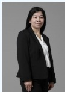
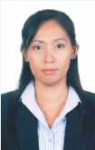
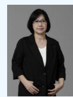
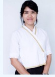
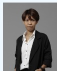

ดร.ปิยะ ถิรพันธุ์เมธี
Piya Thirapanmethee, Ph.D.
*คุณวุฒิ*
Ph.D. (Information and Communication Technology for Education)
King Mongkut's University of Technology North Bangkok
M.Sc. (Information Technology) King Mongkut's University of Technology Thonburi
B.Ind.Tech. (Electronics) King Mongkut's Institute of Technology Ladkrabang

นางศรีสุดา สรนันต์ศรี
Mrs. Srisuda Soranunsri
M.S.Tech.Ed.(Computer and Information Technology) King Mongkut's University of Technology Thonburi
B.Sc. (Computer Science) Ramkhamhaeng University
นายชาญวิทย์ มุสิกะ
Mr. Chanwit Musika
M.Sc. (Internet and Information Technology) Naresuan University
B.S.Tech.Ed. (Computer Engineering) Rajamangala Institute of Technology
ดร.ธวัชชัย สารวงษ์
Thawatchai Sarawong, Ph.D.
Ph.D. (Information Technology) King Mongkut's University of Technology North Bangkok
M.S.Tech.Ed. (Computer Technology) King Mongkut’s Institute of Technology North Bangkok
B.S.Tech.Ed. (Computer Engineering) Rajamangala Institute of Technology
นางกุลชยา พงษ์แสวง
Mrs. Kulchaya Pongsawaeng
M.Ed. (Business Education) Srinakharinwirot University
B.B.A. (General Management) Sukhothai Thammathirat Open University
ผู้ช่วยศาสตราจารย์นพรัตน์ ภัยวิมุติ
Asst. Prof. Nopparat Paivimut
ผู้ช่วยอธิการบดี มหาวิทยาลัยเทคโนโลยีราชมงคลกรุงเทพ,ผู้จัดการคลินิกเทคโนโลยี มหาวิทยาลัยเทคโนโลยีราชมงคลกรุงเทพ
- *คุณวุฒิ*
- ศษ.ม. (เทคโนโลยีและสื่อสารการศึกษา) มหาวิทยาลัยสุโขทัยธรรมาธิราช
M.Ed (Educational Technology and Communication) Sukhothai Thammathirat Open University - บธ.บ. (คอมพิวเตอร์ธุรกิจ) มหาวิทยาลัยสยาม
B.B.A (Business Computer) Siam University - *ประสบการณ์สอน*
- » การเขียนโปรแกรมคอมพิวเตอร์เบื้องต้น
- » โปรแกรมสำเร็จรูป
- » ระบบฐานข้อมูลเบื้องต้น
- » คอมพิวเตอร์พื้นฐาน (Fundamental of Computer)
- » คอมพิวเตอร์เบื้องต้นและภาษาเบสิก
- » การโปรแกรมคอมพิวเตอร์เบื้องต้น(ภาษาเทอร์โบปาสคาล)
- » การโปรแกรมคอมพิวเตอร์เบื้องต้น(ภาษาซี)
- » การโปรแกรมคอมพิวเตอร์เบื้องต้น(ภาษาวิชวลเบสิก)
- *คุณวุฒิ*
- ค.อ.ม. (เทคโนโลยีคอมพิวเตอร์) สถาบันเทคโนโลยีพระจอมเกล้าพระนครเหนือ
M.S.Tech.Ed. (Computer Technology) King Mongkut’s Institute of Technology North Bangkok - ค.อ.บ. (วิศวกรรมคอมพิวเตอร์) สถาบันเทคโนโลยีราชมงคล
B.S.Tech.Ed. (Computer Engineering) Rajamangala Institute of Technology - *ประสบการณ์สอน*
- » วิทยาการคอมพิวเตอร์และเทคโนโลยีสารสนเทศเบื้องต้น (Introduction to Computer Science and Information Technology)
- » คอมพิวเตอร์กราฟิก (Computer Graphics)
- » การปฏิสัมพันธ์ระหว่างมนุษย์กับคอมพิวเตอร์ (Human-Computer Interaction)
- » เทคโนโลยีและการประยุกต์ใช้อินเทอร์เน็ต (Internet Technology and Applications)
- » การออกแบบเว็บไซต์ (Website Design)
- » อัลกอริทึมส์ (Algorithms)
- *คุณวุฒิ*
- วท.ม. (วิทยาศาสตร์คอมพิวเตอร์) จุฬาลงกรณ์มหาวิทยาลัย
M.Sc. (Computer Science) Chulalongkorn University - บธ.บ. (ระบบสารสนเทศ) สถาบันเทคโนโลยีราชมงคล
B.B.A. (Information System) Rajamangala Institute of Technology - *ประสบการณ์สอน*
- » การเขียนโปรแกรมเชิงวัตถุ (Object-Oriented Programming)
- » การวิเคราะห์และออกแบบเชิงวัตถุ (Object-Oriented Analysis and Design)
- »การเขียนโปรแกรมบนเว็บ (Web Programming)
- » การโปรแกรมคอมพิวเตอร์ขั้นสูง (Advanced Programming)
- » วิศวกรรมซอฟต์แวร์ (Software Engineering)
- *คุณวุฒิ*
- วท.ม. (การศึกษาวิทยาศาสตร์-คอมพิวเตอร์) สถาบันเทคโนโลยีพระจอมเกล้าเจ้าคุณทหาร ลาดกระบัง
M.Sc. (Science Education (Computer)) King Mongkut's Institute of Technology Ladkrabang - ค.อ.บ. (อิเล็กทรอนิกส์และคอมพิวเตอร์) สถาบันเทคโนโลยีพระจอมเกล้าเจ้าคุณทหาร ลาดกระบัง
B.S.Tech.Ed. (Electronics and Computer) King Mongkut's Institute of Technology Ladkrabang - *ประสบการณ์สอน*
- » การจัดระเบียบคอมพิวเตอร์และสถาปัตยกรรม (Computer Organization and Architecture)
- » ดิจิทัลอิเล็กทรอนิกส์ (Digital Electronics)
- » ระบบมัลติมีเดียและการประยุกต์ใช้ (Multimedia System and Applications)
- *คุณวุฒิ*
- M.S. (Information System), Ney Jersey Institute of Technology, NJ, U.S.A.
- M.S. (Telecommunication and Network Management), Syracuse University, U.S.A.
- B.Sc. (Information Technology) มหาวิทยาลัยอัสสัมชัญ
B.Sc. (Information Technology) Assumption University of Thailand - *คุณวุฒิ*
- ปร.ด. วิทยาการคอมพิวเตอร์ (หลักสูตรภาษาอังกฤษ) มหาวิทยาลัยเทคโนโลยีพระจอมเกล้าธนบุรี
Ph.D. Computer Science (English Program) King Mongkut's University of Technology Thonburi - วท.ม. (วิศวกรรมซอฟต์แวร์) มหาวิทยาลัยเทคโนโลยีพระจอมเกล้าธนบุรี
M.Sc. (Software Engineering) King Mongkut's University of Technology Thonburi - บธ.บ. (ระบบสารสนเทศ) มหาวิทยาลัยเทคโนโลยีราชมงคลกรุงเทพ
B.B.A. (Information System) Rajamangala University of Technology Krungthep - *ประสบการณ์สอน*
- » Data Science
- *คุณวุฒิ*
- วท.ม. (เทคโนโลยีสารสนเทศ) มหาวิทยาลัยเทคโนโลยีพระจอมเกล้าธนบุรี
M.Sc. (Information Technology) King Mongkut's University of Technology Thonburi - วท.บ. (วิทยาการคอมพิวเตอร์) มหาวิทยาลัยเทคโนโลยีราชมงคลกรุงเทพ
B.Sc. (Computer Science) Rajamangala University of Technology Krungthep - *ประสบการณ์สอน*
- » การพัฒนารูปแบบสื่อออนไลน์ (Online Media Development)
- » คอมพิวเตอร์พื้นฐาน (Fundamental of Computer)
- *คุณวุฒิ*
- M.S. (Computer Science), Syracuse University, U.S.A.
- B.S. (Computer Science), Syracuse University, U.S.A.
- *ประสบการณ์สอน*
- » ผู้ช่วยนักวิเคราะห์ข้อมูลความปลอดภัย
- *คุณวุฒิ*
- วท.ม. (เทคโนโลยีสารสนเทศ) มหาวิทยาลัยเทคโนโลยีพระจอมเกล้าธนบุรี
M.Sc. (Information Technology) King Mongkut's University of Technology Thonburi - วท.บ. (วิทยาการคอมพิวเตอร์) มหาวิทยาลัยเทคโนโลยีราชมงคลกรุงเทพ
B.Sc. (Computer Science) Rajamangala University of Technology Krungthep - *ประสบการณ์สอน*
- » อินเทอร์เน็ตในชีวิตประจำวัน (Internets for Everyday Life)
- » เครือข่ายอินเทอร์เน็ต (Internetworking)
- » เทคโนโลยีและการประยุกต์ใช้อินเทอร์เน็ต (Internet Technology and Applications)
- » การออกแบบเว็บไซต์ (Website Design)
- » คอมพิวเตอร์พื้นฐาน (Fundamental of Computer)

นางสาวสุรีพร นวลนิ่ม
Ms. Sureeporn Nualnim

นางสาวชนาเนตร อรรถยุกติ
Ms. Chananate Arthayukti
นายสถิระ ชัยชนะกลาง
Mr. Satira Chaichanaklang
นายฉัตรชัย รักถิ่น
ผู้ช่วยศาสตราจารย์.ดร.อรสา พัสดุ
Asst. Prof. Orasa Patsadu, Ph.D.

นางสาวมนรดา ศิริมงคล
Ms. Monrada Sirimongkol

นางสาวนิลุบล บุตรไชย
Ms. Nilubon Bootchai

นางสาวสิริอร นุชผดุง
Ms. Sirion Nutphadung